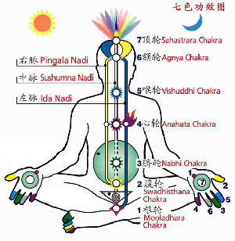

|
七色功效瑜伽
1.脉轮是什么？
一
.
脉轮是什么
:
脉轮通常包括三脉七轮，即左经、右经、中经和七个气轮。气轮沿着中经分布。
二、七轮是什么
:
通常认为有七个主要的气轮。而气轮的梵文是Chakra, 是轮子或旋涡及能量中心的意思 ,
也是指似轮子一般运行所产生的动力 . 它是身体的天线 , 可以接收外来的能量 , 在身体内部蜕变 \ 转化 \ 聚合 .
每一个脉轮是互相连结的 , 象珍珠项链 , 相互之间都有连结 , 由看不见的能量进行传导
. 气轮根据人体横断面主要神经以及其对应器官，与七大内分泌腺为依据把身体划分为顶轮、眉心轮、喉轮、心轮、脐轮、腹轮、根轮七个能量中枢，称为七轮。由脊椎底部向上至头顶排列的七个能量中心
, 人体有数百个能量中心 , 而这七个能量中心是人体最重要的能量轮 。 每一个脉轮都会反映人体当下的能量状况 ,
同时也可协助我们找到器官功能障碍的根源 . 它们的平衡与畅通与否 , 直接与身心灵的健康有关 .
三：七轮与色彩的关系 ( 色彩疗法）
七轮与自然界的七色光谱的关系是一一对应的
：色彩疗法基于流传久远的古印度健康理论，即光谱中的每一种颜色都有一定的波长，产生一定的振动，从而每一种色彩都拥有自己的特殊能量，这些能量跟人体中
7 种内在的具有支配能力的能量相吻合；如果轮穴的能量失去平衡，那么人就会生病，而利用色彩调节身心则可以阻止能量失衡。
颜色能够通过人眼、皮肤、头骨被人吸收，而人体中的每一个细胞都需要光的能量，所以色彩的能量通过细胞吸收后会影响全身，而且是从身体、情感和精神多个层面全面影响人的健康。古印度人在修炼瑜伽时，经常利用自然光达到更佳的练习效果。
顶轮 --------- 对应
紫色有助于减轻上瘾症、偏头痛和缓解头痛;
眉轮 --------- 对应 青色则有助于治疗关节毛病和静脉曲张，让关节灵活；
喉轮 --------- 对应 蓝色对治疗失眠症、高血压有帮助，帮助安心睡眠；
心轮 --------- 对应 绿色有助于缓解神经紧张，让紧张的你不再紧张；
太阳轮 ------- 对应 黄色有助于治疗便秘，提高自信心；
脐轮 --------- 对应 橙色对治疗抑郁症和哮喘有效，抑郁时能赶走你的抑郁
三、何为七色功效瑜伽
:
由于每个气轮都有与之相对应的元素，神经丛，内分泌腺，生命器官，颜色，语音，手印（眼随手动，心随眼动，心动则情生，情生则乐生）！
各种元素融汇贯通在一起，针对性、功效性大大增强，本着瑜伽和谐、统一的精神就产生了七色功效瑜伽！
四、七色功效瑜伽的功效性
当色彩疗法遇到气轮疗法，瑜伽的功效性与针对性便大大增加了，轻松愉快就能练习瑜伽而且不知不觉之中就能从中得益，于是吸引了更多的人们！
色彩疗法的原理在于每一种颜色都会发出不同的频率，当皮肤接触到不同的频率时会反应到不同的部位，每种颜色都会对身体的特定部位及器官发生作用，有些颜色还会对人的心理产生影响，如橙色会令人感到欢畅快乐，对稳定情绪效果极佳；红色有助于促进血液循环；黄色可强化神经系统，促进新陈代谢；蓝色能舒缓神经及肌肉紧张、镇痛；绿色有助于排毒、消炎；紫色对淋巴系统有极佳治疗效果……色彩疗法正是在此理论基础上对人的身体、心理进行调节，从而针对性的提升了瑜伽练习的效果同时还有美容、美体，保健的疗效！
" 阿轮吠陀 " 在梵文里指生命的动力， Vada 指的是知识
、科学、智能，也就是说具有科学知识及人类智能的结合，创造人的生命活力。比如利用最重要的能量脉轮借助精油的功效，以独特的手法帮助调理各脉轮各器官脏腑。每个脉轮都有专属精油，调理能量的正常循环，排出负能量（即消极、灰色的气场），补给正能量；虽然抽象但其神奇的功效令许多抑郁症、肿瘤等病患在接受七轮疗程后奇迹康复，因此风靡欧美、台湾及东南亚。配合热石疗法，可以为客人平衡相对的脉轮，引导客人打开心扉，以释放内脏器官和情感压力，增强脉轮能量，从而达到心、身、灵、气的平衡，能量器官活跃。
五、七色功效瑜伽的特点及适应对象：
有针对性的改善
现代亚健康问题，塑造形体，强化人体气场，激励器官运作，帮助体内能量运作，手法独特，配合多种精选体位、瑜伽呼吸法、冥思、不需仪器；给予的能量唤醒“身体的智慧”，引领我们走出身心的困境。适合工作压力大、公务繁忙、身心疲惫、过度消耗、抑郁沮丧、体寒酸痛、肌肉僵硬、体力不支等症状。
六、每个气轮的具体部位、特定的器官与腺体及主治症状
（功效）：
七个能量聚焦点，主宰人体不同的生理系统，每个气轮均帮助将能量分配到肉体、情绪、心理和精神的不同功能。它们通过内分泌及脊椎神经系统与肉体的各种功效连结，并籍由神经管道及循环系统中介能量进出身体，调节内分泌及免疫系统；籍由这些原理所有的器官、组织及细胞就得到了能量的频率。
| |
名称 |
部位 |
特定的器官与腺体 |
主治症状 ( 功效 ) |
| 第一脉轮 |
根 轮 |
位于椎柱的底部近会阴的 位置，当人体坐在地上身
体中心与地面接触的区域。 |
脊椎底部、坐骨神经、双腿、直肠、免疫机能、性腺。与循环及生殖系统 相关，是所有轮的根本，所有轮的能
量中心。 |
下背痛、坐骨神经痛、直 肠癌、静脉曲张、便秘、
性功能障碍。 |
| 第二脉轮 |
腹轮 |
位于盆骨、与肚脐稍下一
点相对应，肚脐以下的部位。 |
子宫、生殖系统、肠子、骨盆、膀胱
脊椎下段、腺体是胰与脾。对生殖 系统、肌肉系统、排泄系统产生影响。 |
性能力、消化吸收不足，妇科问题、下背痛、骨盆
痛、坐骨神经痛。 |
| 第三脉轮 |
脐轮 |
位于腰部的高度，与身上的太阳神经丛相连，胸骨
中央，肋骨的中间。 |
胃、胰、肝、胆、肾、肠的上段，脊
椎中段。腺体是肾上腺。影响消化系 统，管理排泄系统。 |
消化机能器官病变、情绪 失控、身心症。
|
| 第四脉轮 |
心轮 |
位于心脏的高度，胸腔 中央。 |
心、肺、横膈膜、乳房、双手、胸腺；
影响胸腺及身体整个免疫系统的功能。 |
心、肺、气管疾病、乳癌、 肩部手部不适。
|
| 第五脉轮 |
喉轮
|
位于喉咙底部，喉咙及颈部位。 |
颈椎、喉咙、气管、食道、甲状腺；
对呼吸系统、支气管及整体结构都产 生重要影响。 |
喉咙沙哑、疼痛、甲状腺 问题。 |
| 第六脉轮 |
额轮
|
位于额头的中央，前额中 心，二眉中心稍上处。
|
双眼、耳、鼻、脸部，腺体是下丘脑
及脑下垂体。影响脑下垂体及整个内 分泌系统。 |
头痛、眼痛、鼻子、耳朵 不适、学习障碍、脑部疾
病。 |
| 第七脉轮 |
顶轮
|
位于头的顶部 |
神经系统、肌肉系统、皮肤、松果腺，
影响身体的整个神经系统及松果体功能。 |
没有目标、随波逐流、心慌意乱、忧郁症、精神上的疾病、身心交瘁。 |
七、气轮的心灵功能、最宜强化的精油（单方、复方），水晶 花茶，瑜伽垫（服）
| 名称 |
心灵功能 |
精油 |
水晶 |
花茶 |
瑜伽垫（服） |
|
根
轮
|
维持基底轮的健康在于有效处理自己与族群的
关系；有生存、脚踏实地、丰沛热情、社会秩 序与家族习惯文化。 |
广霍香 乳香 |
石榴石，红宝石 |
玫瑰 |
红色 |
|
腹
轮
|
正面的能量以“尊重彼此”为起点；有打击
惊吓的吸收，性的喜悦，权力、控制、人际关 系的伦理。 |
杜松、茴香、拂手柑、姜、玫瑰、茉莉
|
虎眼石、碧玉 |
玫瑰茉莉 |
橙色 |
|
脐
轮
|
正面的能量以自我尊重为起点；有消化及吸收作用、知识、自尊、自信、照顾自己，情绪的 稳定度。 |
天竺葵、橙花、茉莉、迷迭香、百里香、杜松
|
琥珀、黄金、黄水晶 |
茉莉 |
黄色 |
|
心
轮
|
正面的能量是了解“神就是爱”的真理，以不同的爱的强度与形式去展现神对人的规划，（如宽恕、怜悯、慷慨、照顾他人）；有爱、慈悲、
付出与接受。 |
玫瑰、茉莉、橙花、天竺葵 |
绿帘石、玉、 |
玫瑰茉莉 |
绿色 |
|
喉
轮
|
有表达、沟通、意志的表现、创造力、自我实
践的能力、信心、判断。 |
洋甘菊、姜、茴香、薰衣草 |
翡翠 孔雀石 |
薰衣草 |
青色 |
|
额
轮
|
正面的能量是透过不断追求真理，并转化思想为行动，外在的不利评断也无法影响成熟的智慧；有智慧、自我评量、可见到表象背后的能力。
|
迷迭香、罗勒、杜松、黑胡椒、薰衣草 |
海蓝宝石 |
薰衣草 |
深蓝色 |
|
顶
轮
|
将仁爱、美善、真诚、信义的思想种子化为行为，所储存的正面能量，安置在这属神的恩典
能量中；有与神联结、认真人生目标、无私奉献。 |
薰衣草、乳香、玫瑰、茉莉 |
紫水晶 |
玫瑰 茉莉 |
紫色 |
每一个能量中心都会反应不同的心灵人生课题，结合香熏，晶石，色彩疗法，通过每一个课题又可以增强不同的心灵功能 |